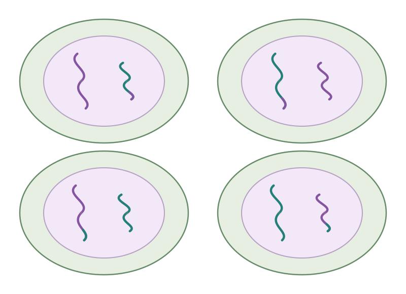

Separar la pareja
Un homólogo hacia cada polo.
Las hermanas siguen juntas.
Biología parte 2 · Actividad 03
Dos divisiones. Nuevas combinaciones.
Así se prepara la reproducción sexual.
Sigue los homólogos y sus copias desde una célula diploide hasta cuatro células haploides.

01 La misión
La meiosis reduce a la mitad el número de juegos de cromosomas y produce células haploides. Está relacionada con la reproducción sexual.
En humanos permite formar gametos: óvulos y espermatozoides. Cada gameto lleva 23 cromosomas.
Gameto = célula sexual haploide.
Al unirse dos gametos, sus juegos pueden recuperar el número diploide. Lo retomaremos en la actividad 04.
cromosomas en la célula inicial
→ cromosomas por célula final
Diploide (2n): dos juegos.
Haploide (n): un juego.
Antes de salir
El ADN se copia una sola vez, antes de Meiosis I, durante la interfase. Cada cromosoma queda formado por dos cromátidas hermanas.
Entre Meiosis I y Meiosis II NO se replica otra vez el ADN.
02 Laboratorio en movimiento
Usaremos dos pares de homólogos: uno largo y uno corto. Toca una etapa o avanza paso a paso. Las puntas intercambiadas viajan con su cromátida.
Largo + largo = un par. Corto + corto = otro par.
Los colores representan el origen del ADN.
4 duplicados8 cromátidas en total
1 célula · 2nEn este momento del recorrido
Preparación · Interfase
Una sola copia del ADN.
La célula es diploide. El ADN ya se replicó una vez: cada cromosoma tiene dos cromátidas hermanas.
Contar cromátidas no es contar juegos de cromosomas. El modelo sigue siendo 2n = 4.
Elige una etapa o reproduce el recorrido. Puedes pausar cuando quieras.
En Meiosis I se reduce el número de juegos: dos → uno. En Meiosis II se separan las copias, sin volver a reducir los juegos.
Las flechas indican el movimiento y las líneas finas representan el huso. Volver atrás sirve para repasar; el proceso real no retrocede.
La célula es diploide. El ADN ya se replicó una vez: cada cromosoma tiene dos cromátidas hermanas. Contar cromátidas no es contar juegos de cromosomas. El modelo sigue siendo 2n = 4.
Los cromosomas se condensan, los homólogos se aparean y se organiza el huso. Entre cromátidas no hermanas puede ocurrir entrecruzamiento. Observa las puntas de otro color: siguen viajando con el ADN que las recibió.
Los pares de homólogos se colocan en el centro. El huso conecta los homólogos de cada par con polos opuestos. Aquí se alinean pares. En la metafase mitótica se alineaban cromosomas individuales.
Un cromosoma de cada par viaja hacia cada polo. Las dos cromátidas de cada cromosoma permanecen juntas. Sigue las X completas. Las hermanas todavía no se separan.
Tras el reparto y la división del citoplasma hay dos células haploides. Cada una recibe un homólogo de cada par, aún con dos cromátidas. Ya son haploides. Entre esta división y la siguiente NO se replica el ADN.
En las dos células se organiza un nuevo huso y los cromosomas se preparan para otra división. Se trabaja con el ADN que ya se copió antes de Meiosis I. No aparece una segunda copia.
Los cromosomas se alinean individualmente en el centro de cada célula. Las hermanas se conectan a polos opuestos. Es parecido a la mitosis, pero estas células ya tienen un solo juego de cromosomas.
Las cromátidas hermanas se separan y van hacia polos opuestos. Desde ese momento, cada una es un cromosoma independiente. Primera división: homólogos. Segunda división: hermanas.
Se forman nuevos núcleos y se completa la división del citoplasma. El resultado general es cuatro células haploides. Cada célula tiene un cromosoma de cada tipo. Las puntas intercambiadas conservan nuevas combinaciones de ADN.
Las telofases se agrupan con la citocinesis para mostrar el resultado de cada división. La división del citoplasma puede comenzar antes de que termine la división nuclear.
La diferencia que importa
Un homólogo hacia cada polo.
Las hermanas siguen juntas.
Cada hermana va a un polo.
Se vuelve un cromosoma independiente.
Después de Meiosis I, una célula ya es haploide aunque sus cromosomas sigan duplicados. Haploide significa un juego, no una sola cromátida en toda la célula.
03 El origen de la diversidad
La meiosis ayuda a generar diversidad genética. Estas son dos de las razones:
En Profase I, cromátidas no hermanas de un par de homólogos pueden intercambiar segmentos correspondientes de ADN.
Intercambio de ADN → nuevas combinaciones.
Después del intercambio, dos hermanas pueden llevar secuencias diferentes.
En Metafase I, cada par puede orientarse de distintas maneras. La orientación de un par no obliga al otro a seguirla.
Dos repartos posibles de dos pares, dibujados sin entrecruzamiento para aislar esta idea. Los cromosomas todavía están duplicados.
Por eso una célula puede recibir distintas combinaciones de cromosomas de origen materno y paterno.
Estas combinaciones, junto con la unión de gametos, ayudan a explicar por qué los hermanos biológicos suelen ser genéticamente distintos. Los gemelos monocigóticos son un caso especial.
El resultado general
Cada célula final recibe un cromosoma de cada par. No recibe la mitad de los tipos de cromosomas: recibe un solo juego de todos ellos.
2n → n + n + n + n
Un matiz en humanos: este dibujo muestra cuatro productos haploides. En la formación de óvulos, el citoplasma se reparte de manera desigual y solo uno de los productos se convierte en gameto funcional; los otros son cuerpos polares. No se forman cuatro óvulos funcionales.
04 Sigue las pistas
Dos prácticas sin calificación. Puedes equivocarte, leer la pista y volver a intentar.
Partimos de esta imagen ↑
05 Conecta lo aprendido
18 preguntas, tres con dibujos. Confirma tu elección para leer la explicación. La primera respuesta confirmada cuenta para el resultado.
Repasa la misión de la meiosis, sus fases y el origen de la diversidad. Al terminar podrás revisar tus errores y repetir.
Recorrido terminado
Meiosis I separa homólogos. Meiosis II separa hermanas. El resultado general es cuatro células haploides con nuevas combinaciones genéticas.
Continúa con 04 · Mitosis vs. meiosis y reproducción. Une todas las ideas y cierra la sesión con el test integrador.